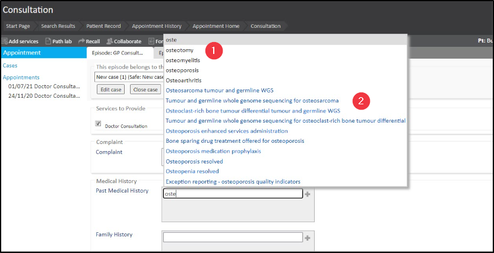
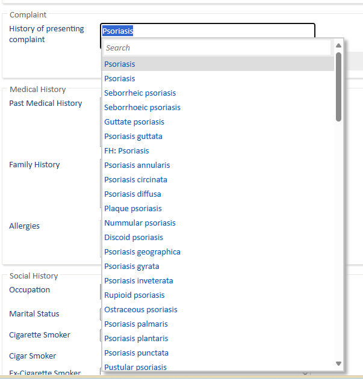
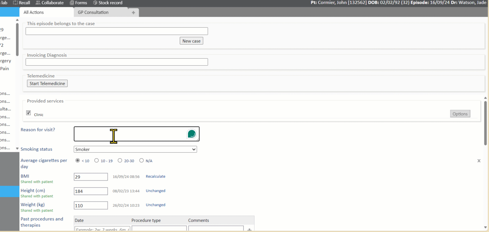
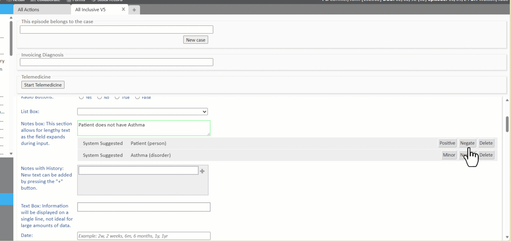
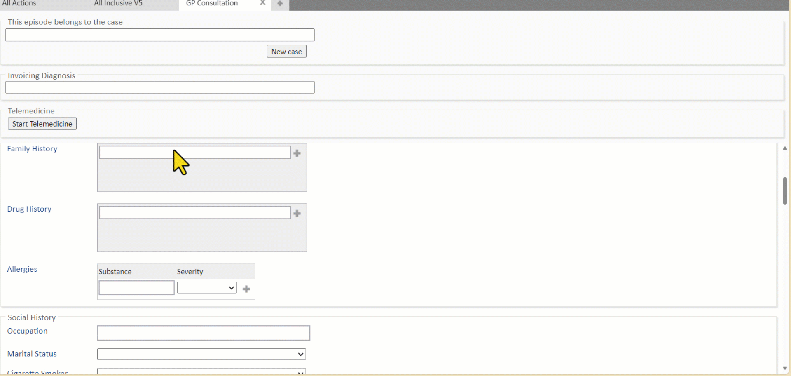
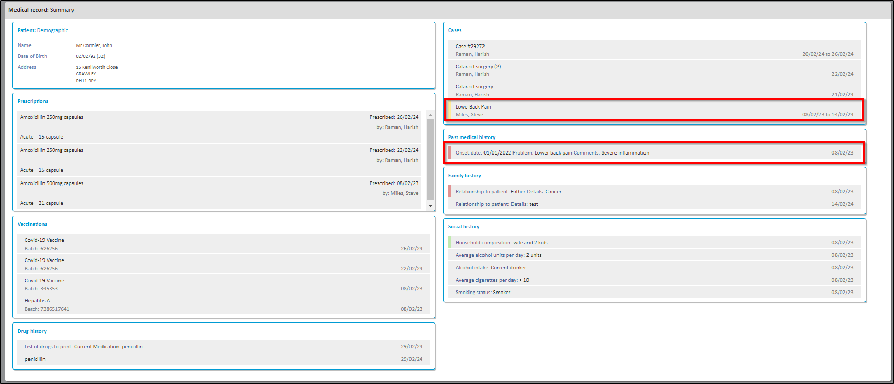

SNOMED CT is a structured clinical vocabulary for use in an electronic health record. It is the most comprehensive and precise clinical health terminology product in the world. The primary purpose of SNOMED CT is to encode the meanings that are used in health information and to support the effective recording of clinical data with the aim of improving patient care.
Meddbase Clinical Forms can utilise SNOMED CT to provide Clinical Decision Support when Prescribing.
This article will walk you through important things to note when working with SNOMED CT codes/terms in Meddbase from a Clinical Safety perspective.
The article will cover the following topics:
There are advanced settings in Meddbase that affect Clinical Form behaviour and enable additional features.
One of these features allows using SNOMED CT coding on Clinical Forms.
Click here for a detailed article.
Once SNOMED CT coding has been activated, whilst typing/dictating into a Clinical Form field, you will notice a pop-up window with suggestions of words and phrases based on what's being typed/dictated. There are 2 types of suggestions you will see:
The Meddbase NLP (Natural Language Processing) engine continuously submits the text to the SNOMED CT service in an attempt to match what is being typed/dictated with SNOMED CT codes/terms. Any matches that are found will be added as System Suggested against the patient. The System Suggested matches can then be confirmed, negated or deleted. All* SNOMED CT matches are taken into account by the Multilex Clinical Decision Support engine when prescribing drugs in Meddbase.
*DELETED matches are not taken into account.

If you wish to search for all SNOMED CT related to a specific word typed, highlight the word. This will activate the option to search SNOMED codes. Using this will allow you to be precise about the SNOMED CT term you are looking for and be able to confirm it to the PMR.

Meddbase Clinical Forms can auto-save entries or require user action to save. This depends on the type of field used:
*When text is entered into a Numerical Data field, where a number is expected, the outline of the field turns Red to indicate the entry was not saved.
 button.
button. .
. .
.
When working with SNOMED CT codes/terms, is it very important to ensure that these terms are correctly attributed to findings, disorders and allergies. It is particularly important in the context of Acute and Repeat drug prescribing in Meddbase.
A Multilex Clinical Decision Support engine in Meddbase provides Preparation Warnings, where drugs are contraindicated in relation to ALL* SNOMED CT codes/term matches (System Suggested / Confirmed/ Negated/ Minor/ Major) for findings, disorders and allergies recorded as part of patient's consultations in Meddbase.
*DELETED matches are not taken into account.
Click here for more details on Prescribing in Meddbase.
In the first instance, a match of text to a SNOMED CT code/term is System Suggested , as shown above.
This mean the match 'has been coded by a computer, but not yet confirmed by a human'.
The System Suggested match is taken into account by the Multilex Clinical Decision Support engine when prescribing drugs.
A System Suggested match other than a finding, disorder or allergy, can simply be Confirmed, which means:
'I agree that this code/term is valid'
In the below example the text entered is:
'This patient has back pain'

As mentioned in the Field entry context chapter, is it very important to ensure that these terms are correctly attributed to findings, disorders and allergies. It is particularly important in the context of Acute and Repeat drug prescribing in Meddbase, so that drug contraindications are provided accurately by the Clinical Decision Support engine.
A System Suggested match can be Negated, which means:
'The opposite was meant here'.
In the below example the text entered is:
'Patient does not have Asthma'

A System Suggested match can simply be Deleted, which means:
'I do not want this code/term associated with this patient's record at all'
In the below example the text entered is:
'Patient's mother suffers from Anxiety'

System Suggested matches for Findings and Disorders can be confirmed with an indication of Severity:
or
In the below example the text entered is:
'Patient suffers from Anxiety'
The Medical Record: Summary section of the patient's Medical History displays severity for:

For more information on The Medical History, please refer to our article on Working with the Medical History
All SNOMED CT codes associated with a patient can be viewed in the SNOMED CT Review Screen available from the Patient's Medical History from the Patient Record page, or in a Consultaiton..This is a holistic view of all SNOMED associated terms including System Suggested, Confirmed, deleted and historical terms. These associated terms can be acted upon and have their severity level modified from this page.
For more information on SNOMED CT Review Screen, please refer to our article on the SNOMED CT Review Screen.